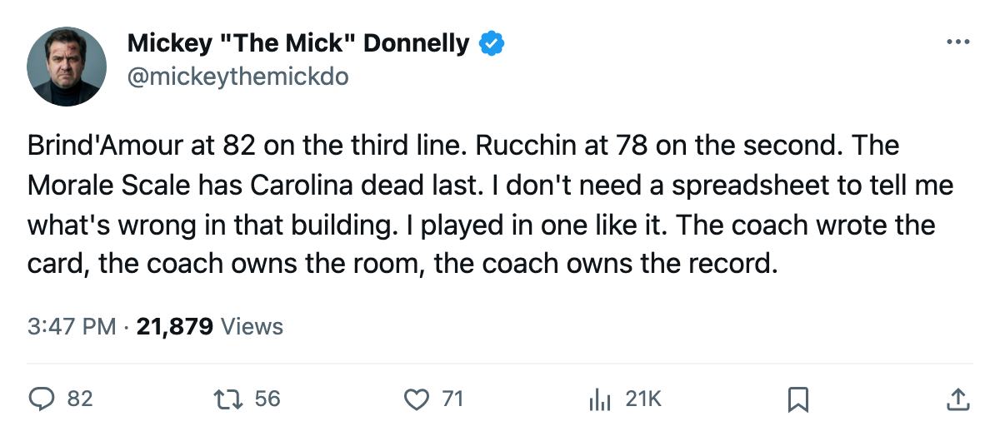
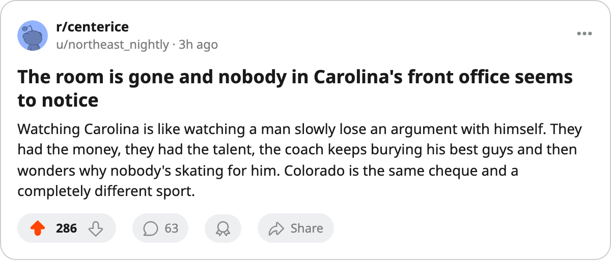

CAR
CAR COL
COLSAME MONEY. WORST ROOM. THIRD-LINE BRIND'AMOUR. WELCOME TO CAROLINA.
Carolina and Colorado spend within $1.1M of each other. One has the saddest locker room in hockey. The other has the happiest. They meet tonight for the first time.
 Mickey "The Mick" DonnellyColumnist, ex-goalie · The Penalty Box
Mickey "The Mick" DonnellyColumnist, ex-goalie · The Penalty Box
Carolina's coach: worst morale in hockey, mis-slotted his best center, 9-13 at home

Carolina spends $65.29M. Colorado spends $66.38M. That is the entire argument for why Carolina sits at 11-18-6 and Colorado at 19-12-7 on a 6-game win streak. Not talent. Not money. The room.
The Bureau's Morale Scale has Carolina at 87.1, tied with Edmonton for dead last in this league. Colorado sits at 98.9, tied with Vancouver for first. Eleven and a half points. Same zip code for the payroll, opposite zip code for the culture. Tonight they meet for the first time this season and the contrast is the whole story.
Colorado's coach won the Jack Adams last season and his team looks like it.  Peter Forsberg95 has 51 points in 42 games at age 32.
Peter Forsberg95 has 51 points in 42 games at age 32.  Paul Kariya89 has 49 assists, the most of any man on this sheet, and skates 21.3 minutes a night.
Paul Kariya89 has 49 assists, the most of any man on this sheet, and skates 21.3 minutes a night.  Milan Hejduk88 adds 44 points. Three veterans, all producing, all playing for the happiest club in hockey.
Milan Hejduk88 adds 44 points. Three veterans, all producing, all playing for the happiest club in hockey.
Carolina's coach has  Rod Brind'Amour82, an 82 on the Bureau's Book, centering the third line while
Rod Brind'Amour82, an 82 on the Bureau's Book, centering the third line while  Steve Rucchin78, a 78, centers the second. You read that right. The best center on the roster is the third-line center. The lineup card is the story every night and the coach keeps writing the same sentence.
Steve Rucchin78, a 78, centers the second. You read that right. The best center on the roster is the third-line center. The lineup card is the story every night and the coach keeps writing the same sentence.
 Radek Dvorak79 carries a 79 and plays the right wing on the third line. He carries a 72 on the Morale Scale, the second-lowest number on the entire league sheet. The man does not want to be there and the coach keeps dressing him in a slot that makes no sense when he's already in the building.
Radek Dvorak79 carries a 79 and plays the right wing on the third line. He carries a 72 on the Morale Scale, the second-lowest number on the entire league sheet. The man does not want to be there and the coach keeps dressing him in a slot that makes no sense when he's already in the building.
Carolina's home record is 9-13. Colorado's road record is 12-7. The visiting team is better in someone else's building than Carolina is in its own.
$1.48M per point for Carolina. $1.25M per point for Colorado. Colorado buys more hockey with the same cheque because its players believe the next shift matters. Carolina's players check the score and check the clock.
The blame goes to the coach first. A 3rd-line Brind'Amour tells the room exactly where the coaching staff thinks the team is. A 72 morale next to a 79 overall tells you the man has stopped pretending. The players are telling you something. The coach isn't listening.
Tonight is the free pass. Win, and the streak continues, the building fills, the next lineup card gets written with a little less spite. Lose, and Carolina is one more week away from a GM who reads the Morale Scale and starts making calls the coach won't like.

